SINUT UNP
DEFENDIENDO LOS DERECHOS LABORALES DE QUIENES PROTEGEN LA VIDA EN COLOMBIA
Una organización sindical que crece desde los territorios, trabajando por el bienestar, la seguridad y los derechos laborales de sus afiliados.
DEFENDEMOS TUS DERECHOS
La defensa de los derechos laborales es nuestra prioridad fundamental e intransigente.
ESTAMOS EN EL TERRITORIO
SINUT UNP está presente en los territorios, acompañando a hombres y mujeres de protección que protegen la vida en Colombia.
HAZ PARTE DE SINUT UNP
Unidos somos más fuertes. Haz parte de esta gran familia sindical y fortalece las garantías de defensa de derechos laborales de hombres y mujeres de protección en todo el país.
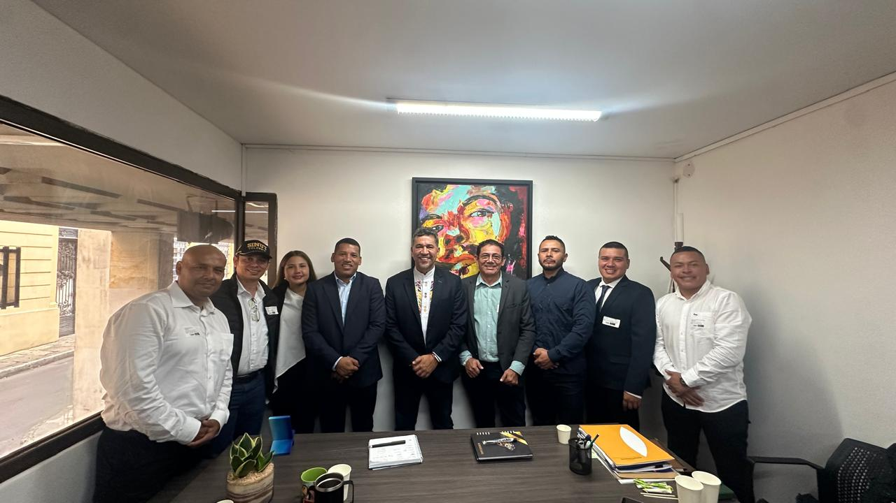
¿QUIÉNES SOMOS?
SINUT UNP es una organización sindical comprometida con la defensa de los derechos humanos y laborales de los hombres y mujeres de protección que protegen la vida en Colombia.
Trabajamos desde los territorios para fortalecer la representación, el bienestar y la seguridad de nuestros afiliados y sus familias, garantizando condiciones dignas en el ejercicio de su importante labor.
REUNIÓN CON EL DIRECTOR DE LA UNP
Se llevó a cabo una importante reunión de trabajo con el director de la UNP para revisar compromisos, fortalecer la representación y velar por el bienestar de nuestros afiliados.
A través de estos espacios de concertación, continuamos garantizando condiciones dignas en el ejercicio de la labor de protección en todo el país.
MISIÓN Y VISIÓN
MISIÓN
La misión de SINUT UNP es Brindar respaldo, representar y defender los derechos humanos y laborales de hombres y mujeres de protección, afiliados a nuestra agremiación para lograr mejores condiciones, teniendo siempre la consigna, lograr mejores condiciones de vida y trabajo para los hombres y mujeres de protección y sus familias. Luchando con vehemencia para defender los derechos humanos y laborales de los trabajadores, contratados por las diferentes uniones temporales, contratadas por la Unidad Nacional de Protección, tanto a nivel local como nacional, Impulsando el liderazgo y la formación integral de los trabajadores.
VISIÓN
SINUT UNP Trabajara para que, en 2030, sea el sindicato con mayor número de afiliados, con reconocimiento a nivel Nacional, por proteger derechos humanos y laborales, de hombres y mujeres de protección, desarrollando una función honesta, transparente y de calidad, participando activamente del diálogo y colaborando al desarrollo como parte de nuestro quehacer sindical.
TRES AÑOS DEFENDIENDO DERECHOS LABORALES
Una organización que crece desde los territorios.
Fundación y Raíces
La organización sindical SINUT UNP fue creada, en el departamento de Putumayo, por líder de derechos Humanos Gustavo Delgado el día 30 de agosto de 2023, al observar la problemática, de atropellos y falta de defensa de derechos humanos y laborales a los hombres y mujeres de protección por parte de las uniones temporales.
Expansión Territorial
Despliegue y articulación de directivas sindicales en Putumayo, Caquetá, Huila, Nariño, Cauca, Valle del Cauca, Tuluá y Caldas.
Consolidación e Impacto Nacional
Fortalecimiento de garantías laborales, puesta en marcha del eje ambiental y social, y lanzamiento de la emisora digital oficial.
SINUT UNP RADIO DIGITAL
La emisora de todos los hombres y mujeres de protección.
¡SINUT UNP RADIO DIGITAL ESTÁ AL AIRE!
Nuestra organización sindical activa su emisora digital para toda la Gran Familia SINUT UNP y nuestra gran audiencia.
Música | Actualidad | Información | Contenido para todos.
SINUT UNP RADIO DIGITAL, la emisora de nuestra gran familia.
¡Conéctate y acompáñanos!
Señal Principal AzuraCast
ACTUALIDAD SINUT UNP
AVANZA EL DIÁLOGO EN EL SENADO
Desde SINUT UNP seguimos atentos al trámite de la iniciativa que busca reconocer a los hombres y mujeres de protección como trabajadores de alto riesgo.
LEER MÁS
Quienes cumplen esta importante labor recorren diariamente los territorios, muchos de ellos afectados por la presencia de delincuencia común, delincuencia organizada y grupos armados ilegales, entre ellos estructuras disidentes de las antiguas FARC, el ELN, el Clan del Golfo y otras organizaciones armadas. La realidad territorial demuestra que proteger la vida de otros también significa exponer la propia. La Defensoría del Pueblo ha documentado escenarios de confrontación y riesgo en diferentes regiones del país. Por eso, desde SINUT UNP continuamos defendiendo el reconocimiento de esta labor y los derechos laborales de quienes protegen la vida en Colombia. ¡El alto riesgo de nuestra labor debe ser reconocido! SINUT UNP, defendiendo derechos laborales.
REUNIÓN CON LA SUBDIRECTIVA CAUCA
SINUT UNP continúa fortaleciendo el trabajo en territorio, escuchando a nuestros afiliados y avanzando en la defensa de sus derechos laborales.
LEER MÁS
Temas tratados:
Reconocimiento de la labor de protección como actividad de alto riesgo.
Condiciones de seguridad y riesgos que enfrentan los trabajadores en territorio, especialmente en zonas con presencia de delincuencia común, delincuencia organizada y grupos armados ilegales.
Situación laboral de los hombres y mujeres de protección.
Defensa de los derechos laborales y sindicales de los trabajadores de la UNP.
Avances y seguimiento al diálogo en el Senado frente al proyecto de ley de alto riesgo.
Fortalecimiento de la organización sindical y unidad de la Subdirectiva Cauca.
Seguimiento a las necesidades y problemáticas de nuestros afiliados en el territorio.
Desde SINUT UNP reafirmamos nuestro compromiso de escuchar a nuestros trabajadores, acompañar sus necesidades y seguir trabajando por mejores condiciones laborales y de seguridad.
¡La defensa de quienes protegen la vida también es nuestra lucha!
SINUT UNP — Unidos por nuestros derechos.
SINUT UNP NARIÑO, MÁS CERCA DE NUESTROS AFILIADOS
En la Subdirectiva Nariño llevamos a cabo una jornada muy especial con nuestros afiliados, compartiendo un espacio de cercanía, amistad y compañerismo.
LEER MÁS
Con mucho cariño hicimos entrega de chaquetas, vasos y calendarios, detalles que representan nuestro agradecimiento por la confianza y por hacer parte de esta gran familia sindical SINUT UNP. Más que entregar un detalle, buscamos fortalecer los lazos de amistad, unión y solidaridad que nos permiten permanecer cerca de nuestros afiliados y conocer de primera mano sus necesidades y realidades en el territorio. Cada afiliado es parte fundamental de nuestra organización. Por eso, SINUT UNP continúa trabajando para estar presente, acompañar y defender los derechos laborales de los hombres y mujeres de protección en Colombia. Porque somos una familia, porque caminamos juntos y porque unidos somos más fuertes. SINUT UNP — Defendiendo derechos laborales.
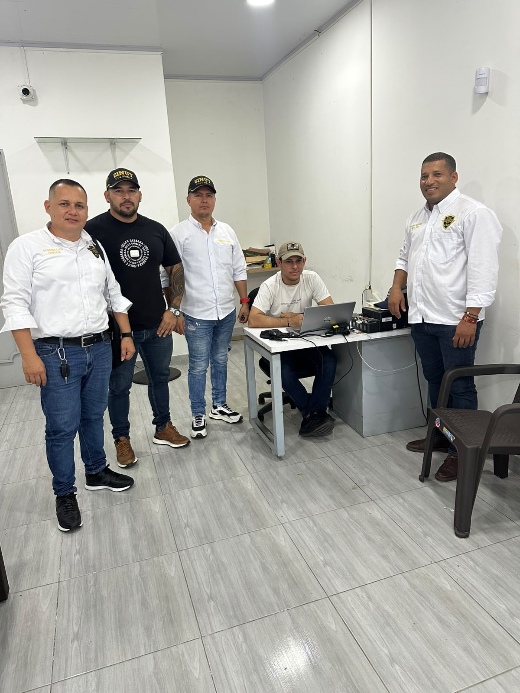
REUNION SUBDIRECTIVA CAQUETA
En Florencia, Caquetá, se realizó una importante reunión para la conformación de la nueva Junta Directiva, reafirmando nuestro compromiso con la organización sindical y la defensa de los derechos laborales de los hombres y mujeres de protección..
LEER MÁS
Con el acompañamiento del señor Residente Gustavo Delgado y la señorita Natalia Lugo tesorera Nacional se SINUT UNP se lleva acabo la reunión donde se conforma la nueva junta de directiva de SINUT UNP subdirectiva Caquetá.
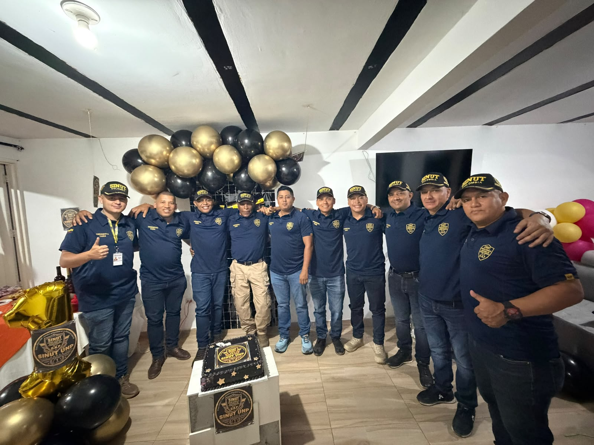
La familia SINUT UNP se reúne en Popayán Cauca.
Con el acompañamiento del señor Residente Gustavo Delgado y la señorita Natalia Lugo tesorera Nacional se SINUT UNP se lleva acabo la reunión donde se celebra el primer aniversario de la Subdirectiva SINUT UNP Cauca.
LEER MÁS
Un año de compromiso, unión y trabajo en el territorio, fortaleciendo nuestra organización sindical y avanzando juntos en la defensa de los derechos laborales de quienes protegen la vida en Colombia. ¡Feliz primer aniversario, Subdirectiva SINUT UNP Cauca! SINUT UNP, unidos somos más fuertes.

SINUT UNP VALLE DEL CAUCA SOLIDARIO
Desde SINUT UNP Solidario acompañamos de corazón a las comunidades y familias afectadas por el terremoto del 10 de agosto.
LEER MÁS
Sabemos que en momentos difíciles, una mano amiga, una palabra de aliento y un gesto de solidaridad pueden marcar la diferencia. Por eso, estamos presentes, compartiendo no solo apoyo, sino también esperanza, fuerza y fraternidad. Porque ser parte de SINUT UNP también significa estar al lado de nuestra gente cuando más nos necesita. ¡Hoy por ellos, mañana por todos! SINUT UNP Solidario — unidos somos más fuertes.
SINUT UNP SOMOS TODOS
"Una gran familia sindical unida por la defensa de los derechos laborales y la protección de la vida."
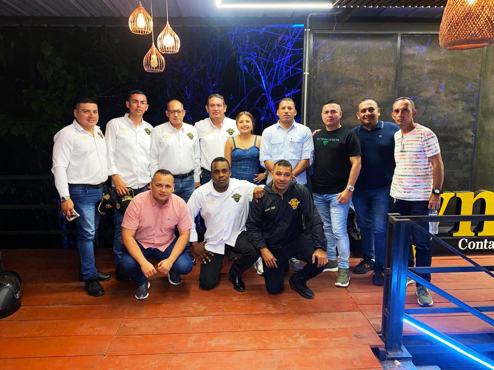
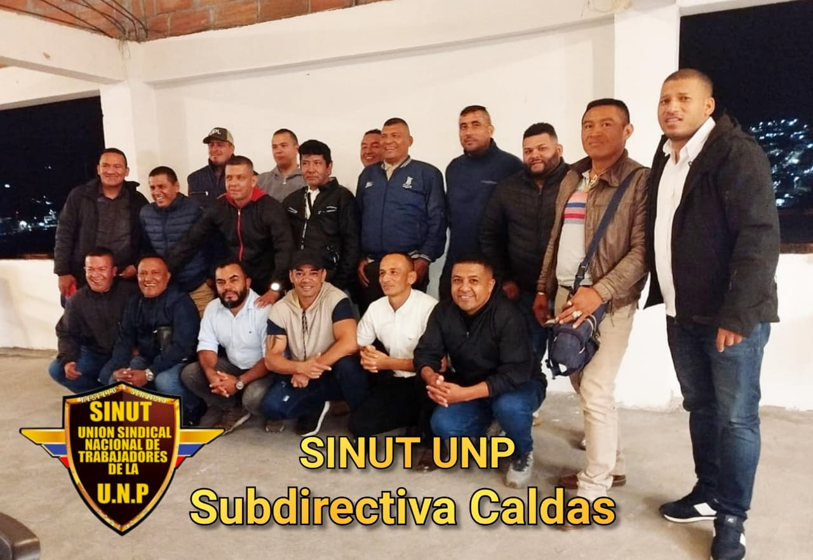
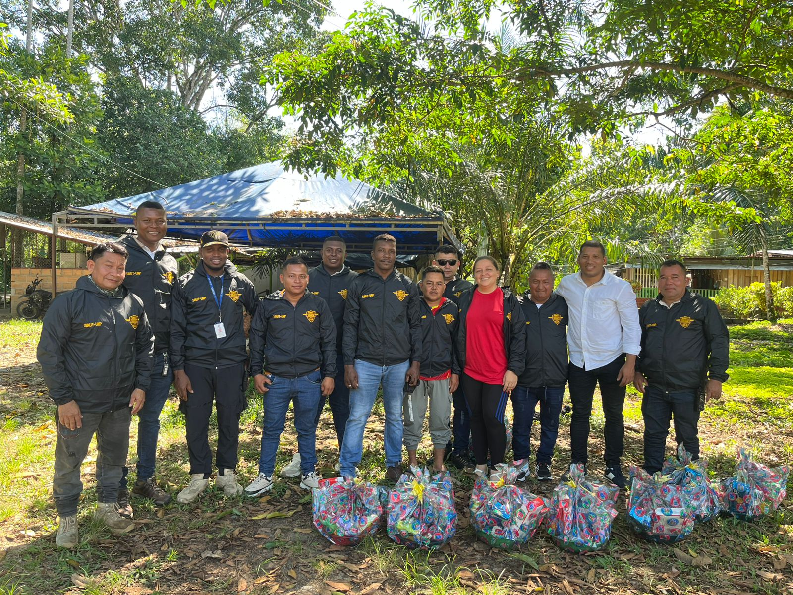
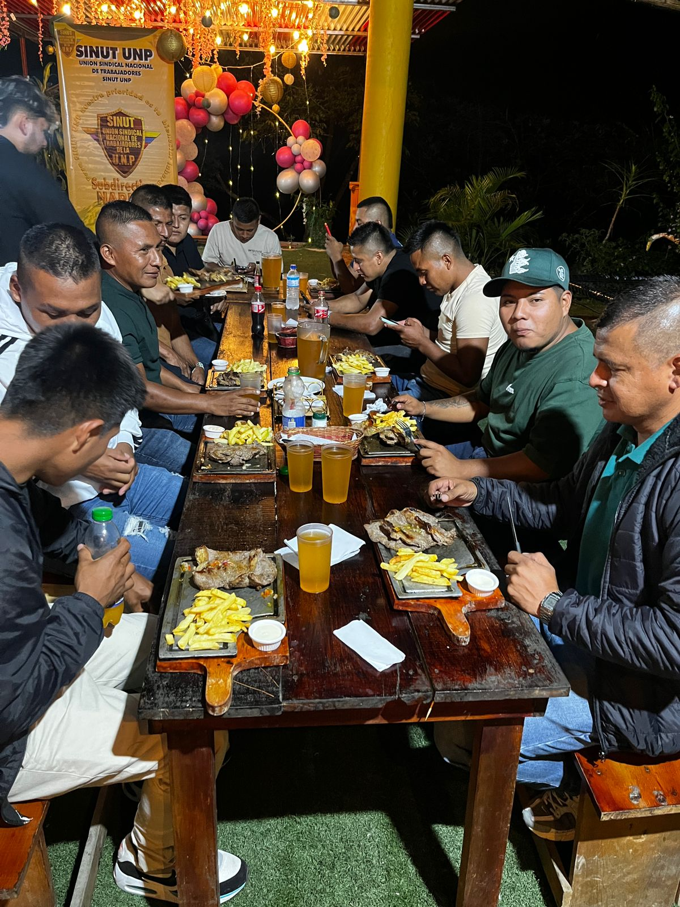

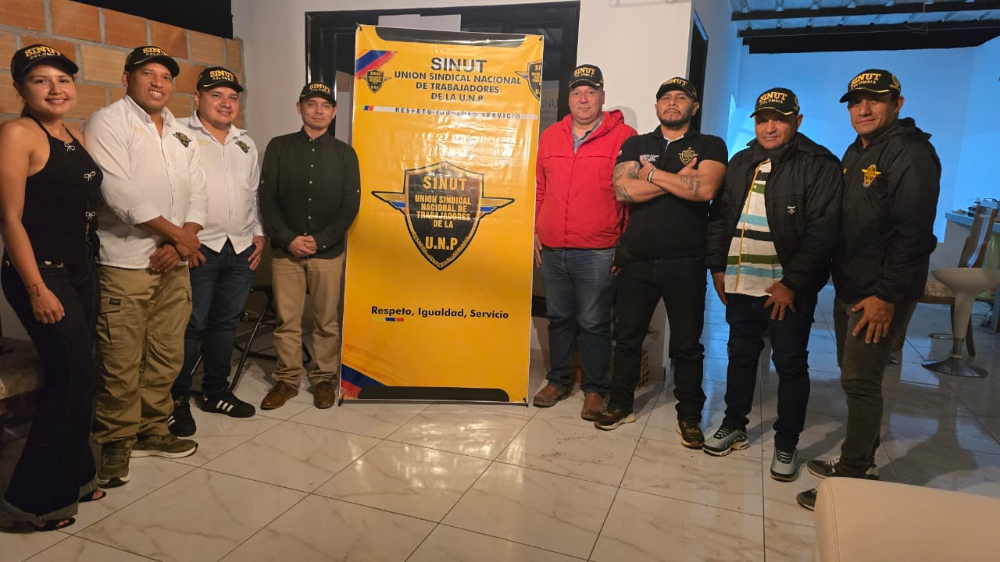
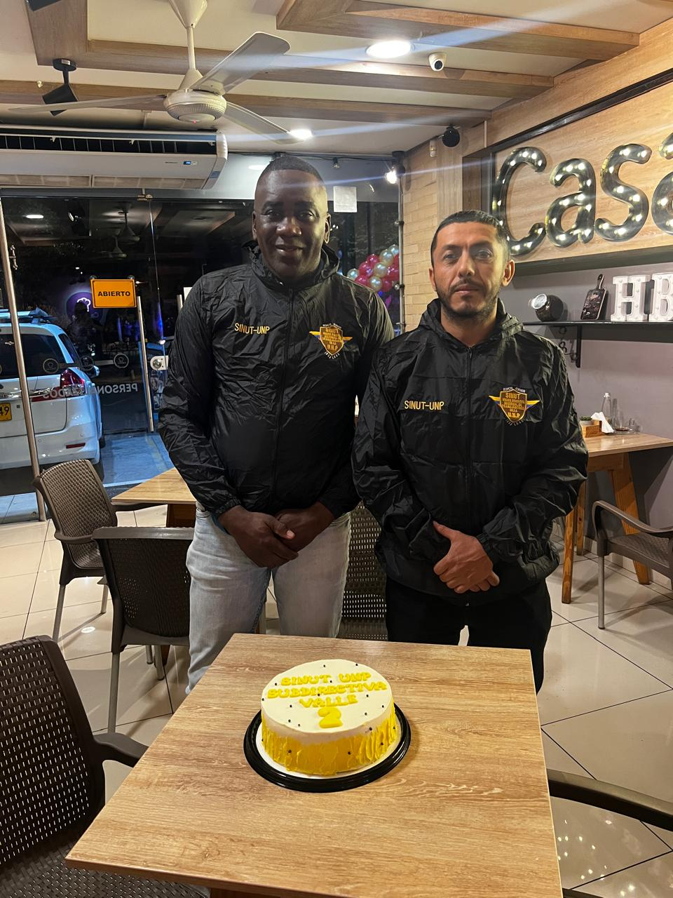

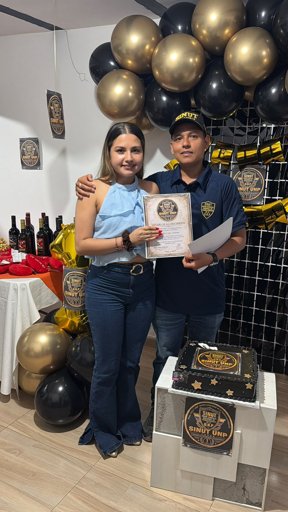
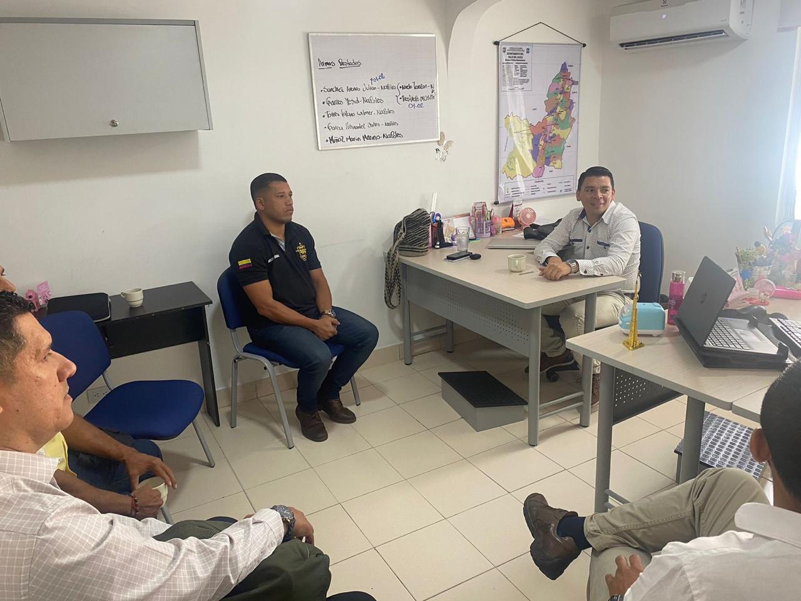
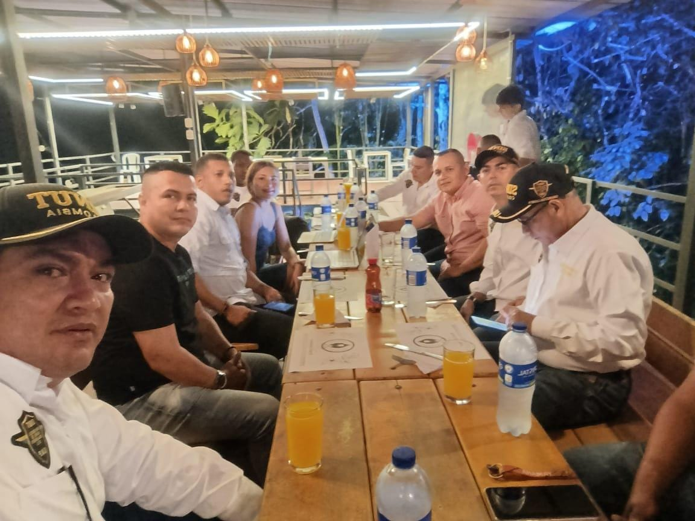
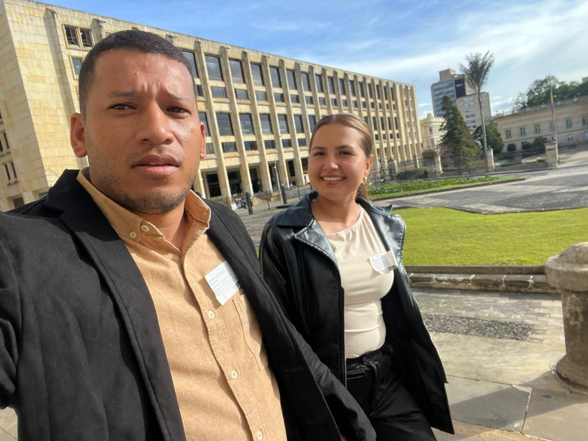
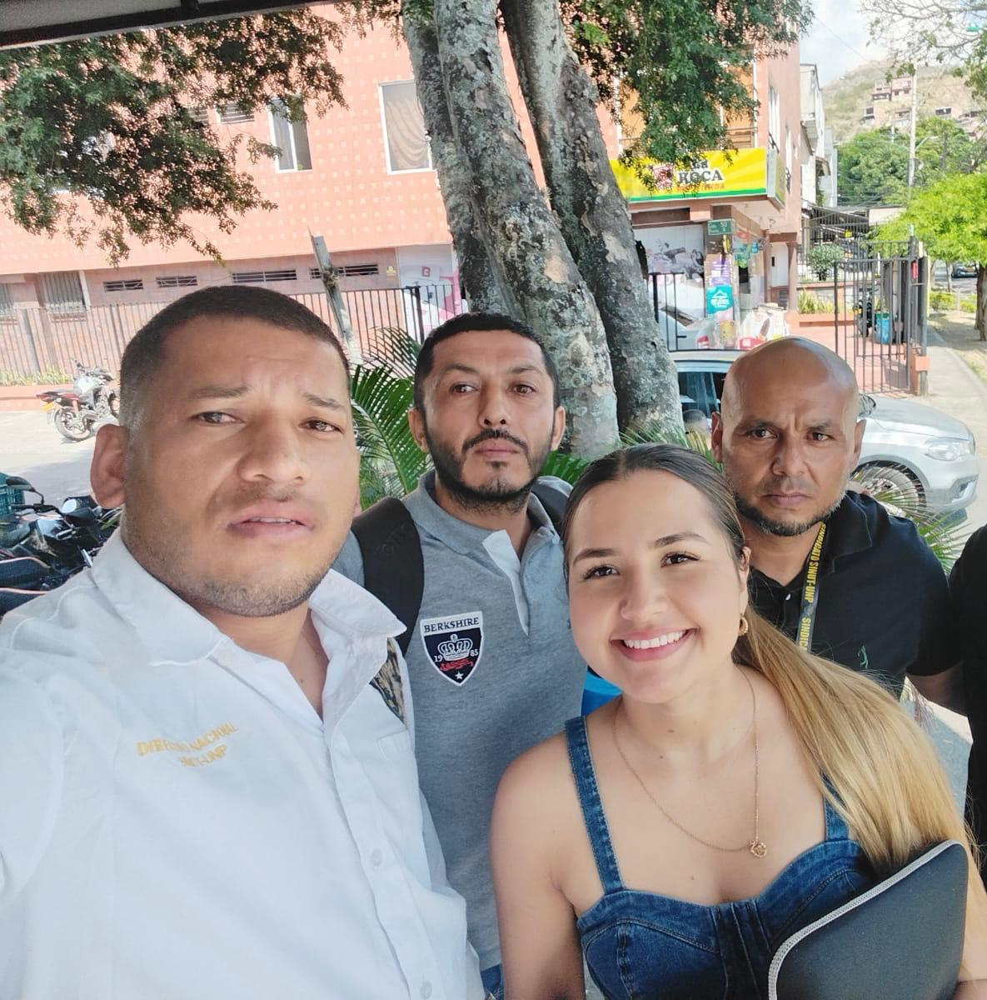
¿ERES HOMBRE O MUJER DE PROTECCIÓN?
HAZ PARTE DE SINUT UNP
Únete a una organización que trabaja día a día por la defensa de tus derechos laborales y el bienestar de tu familia.
Afiliación segura y confidencial
Formulario de Registro
CONTÁCTANOS Y REDES SOCIALES
Estamos a tu disposición para brindarte atención directa, orientación laboral y atender todas tus inquietudes en el territorio nacional.